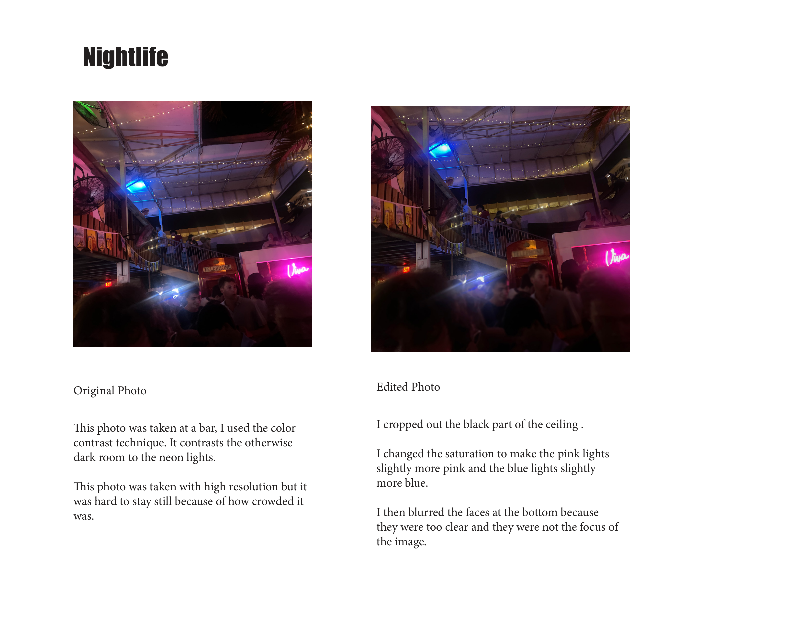
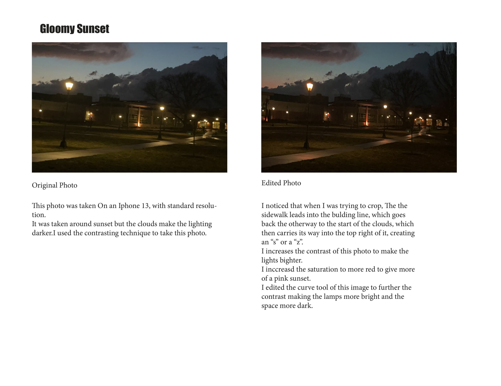
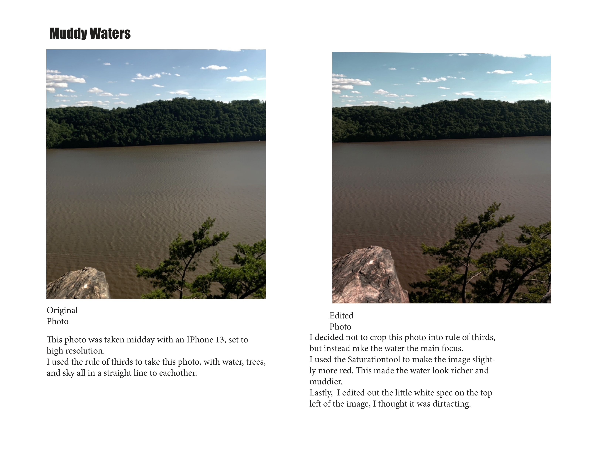
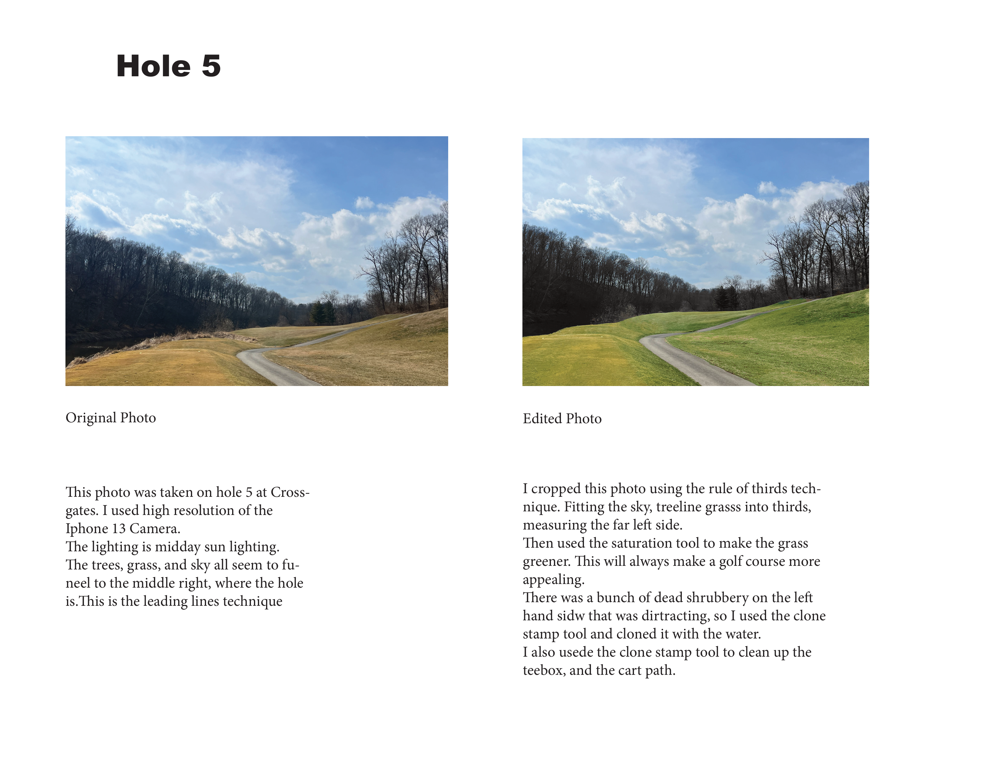

For the Photography Project, we first had to come into class with 8 photos taken. At least 2 of these photos had to be indoor photos. The first step was to take 4 you like and then edit them in Adobe Photoshop. After you had the four final photos, you transfeered them to Indesign with the original photos to compare them, you would describe what changes you made to each picture using photgraphy methods.




© 2025 Nate Roeder